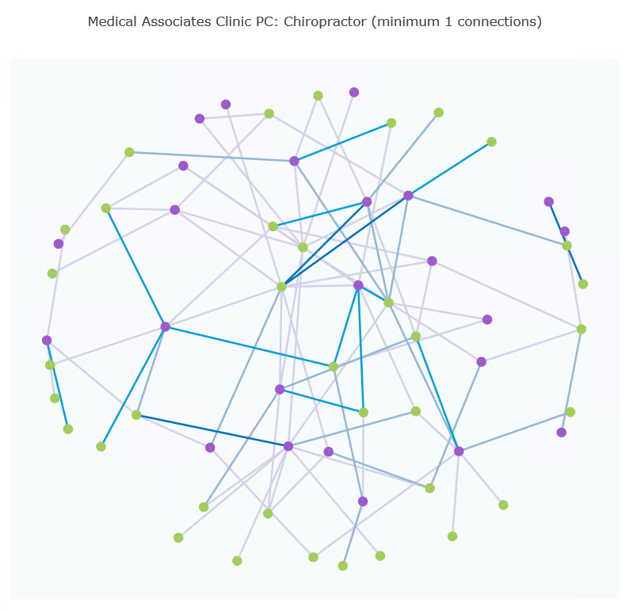
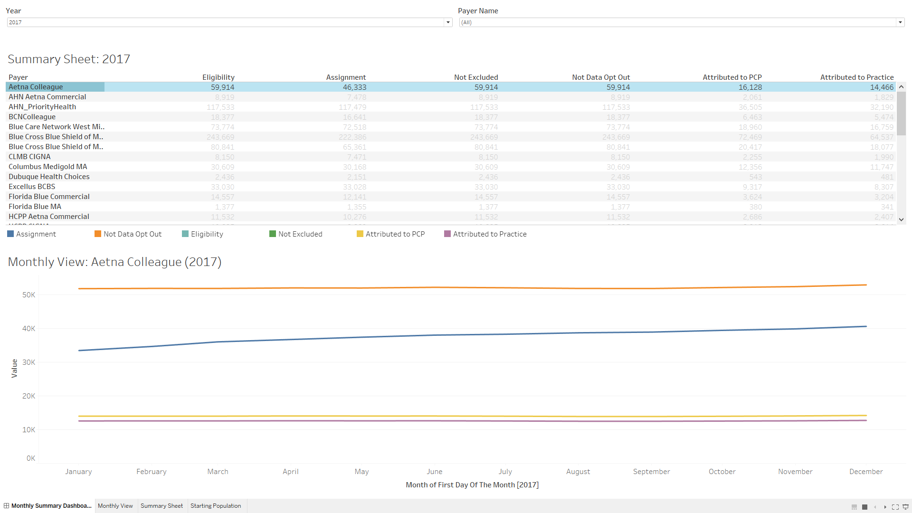
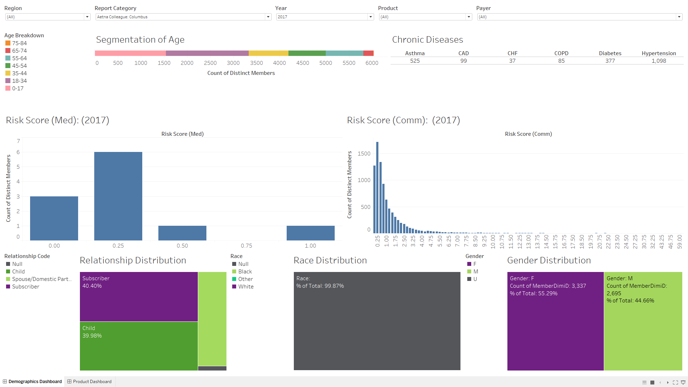
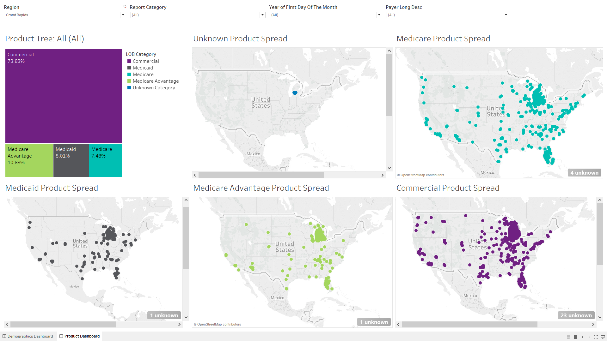
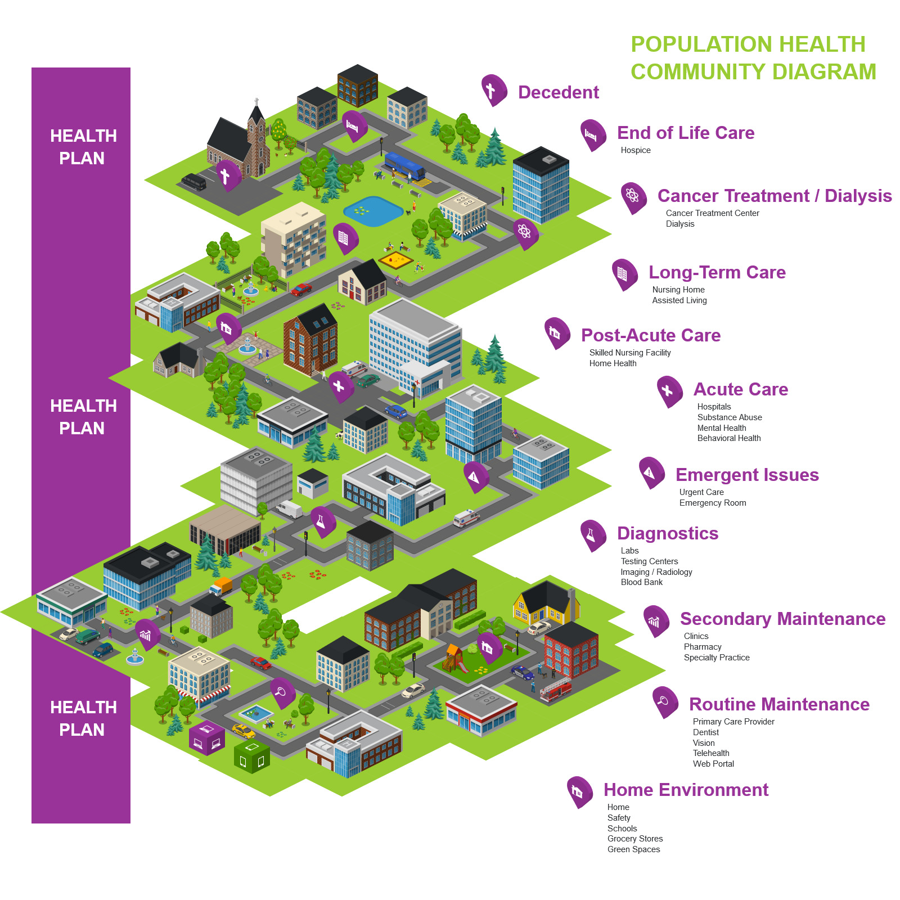
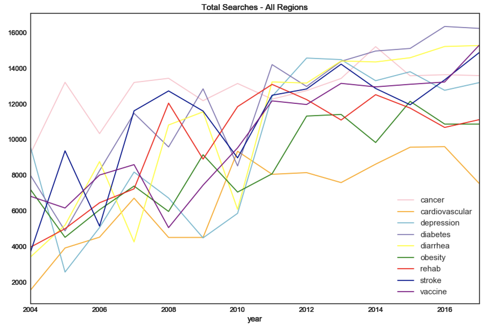
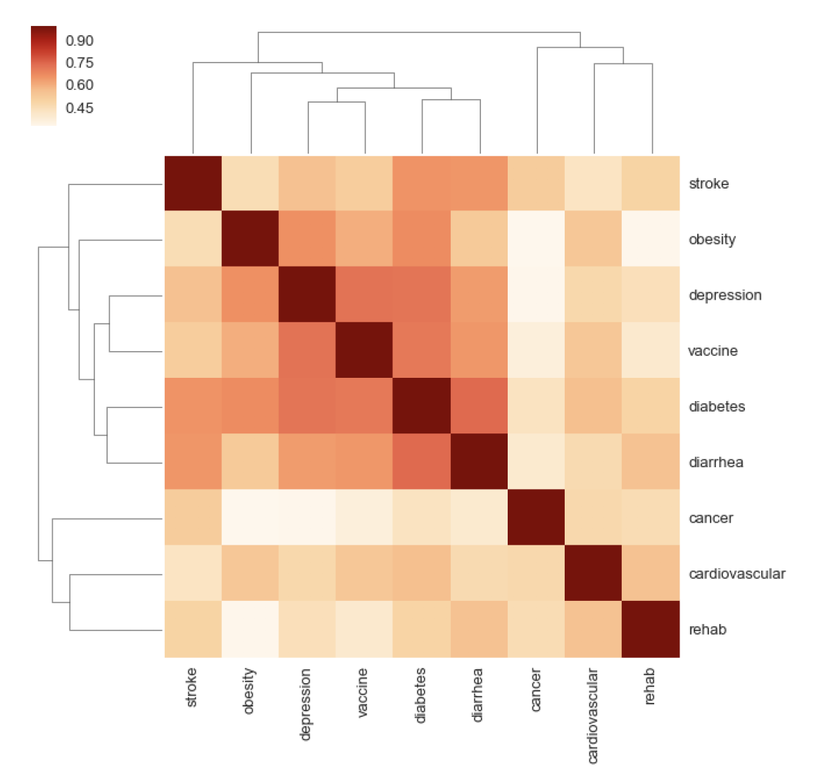

Check out some of my data driven projects below:
Physician Network Diagram
Attributed Populations Demgographics
  Isometric Community Health Model
Health-Related Google Search Analysis
 

Read my full report on health-related Google searches here: